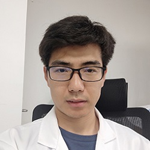
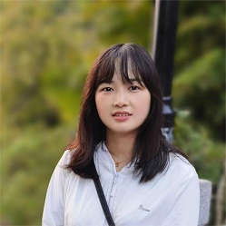
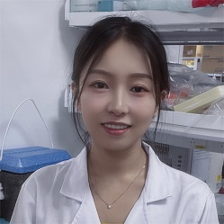
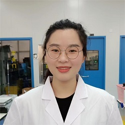

Members
Chan Yun Shen Winston
 曾永昇
曾永昇
Principal investigator, Ph.D.
Winston graduated from the National University of Singapore and did his research training in the laboratory of renowned stem cell scientist Prof Ng Huck Hui, in the Genome Institute of Singapore (GIS). After graduation, he continued working as a postdoc and an innovation fellow in GIS looking into translating research outcomes. He is also an awardee of the Gilead Sciences Research Scholars in Liver Disease Asia 2019. Winston believes that science is a team sport and invites like minded individual to join the team!
Staff
Lingyan
 杨令延
杨令延
Associate Professor, Ph.D.
Lingyan graduated from the University of Science and Technology of China with a PhD’s degree in cell biology. He did his research training in the Key Laboratory for Nano-Bio Interface in Chinese Academy of Sciences. He joined Winston’s lab at the July of 2021 and worked as an associate professor. Lingyan has a strong interest in stem cell and exosomes research for disease diagnosis and treatment. He dedicates to basic research and translational applications of human health. He likes reading, playing table tennis, and traveling with his family.
Freda Yue Liu
 刘悦
刘悦
Research assistant, MNSc
Freda graduated from University of Melbourne majoring Pharmacology and Nursing Science. Received her research training at Royal Melbourne hospital in Australia. She joined Winston’s lab at the July of 2020 and worked as a research assistant. She is enthusiastic about cell biology, signaling pathway and therapeutic application of small molecules. She loves movie,travelling and small animals with fur.
Jiayi
郑嘉怡
Research Assistant, BMLSc
Jiayi has a Bachelor in Medical Laboratory Science at Queensland University of Technology. She has applied her skills during internships in clinical pathology and hospital. In Sep 2020, she joined Winston’s lab to study and practice basic biology experimental skills as a research assistant, and is taking care of the administrative work for the lab at the same time. She likes taking photographs, and enjoys playing badminton.
Shixiang
王世祥
Research assistant, MBE
Shixiang got a bachelor's degree in biotechnology at Huazhong University of Science and Technology (Wuhan, China) and a master's degree in bio-engineering at Huazhong Agricultural University (Wuhan, China). He joined the lab as a research assistant to improve his experimental skills and learn theoretical knowledge in July 2021. He keeps the curiosity about new things and loves to explore the unknown. He also has a great interest in music and astronomy.
liyan
吴骊燕
Research assistant/Lab Manager, BAC
Liyan graduated from South China Normal University majoring in accounting. She worked at the Guangzhou Institute of Energy Conversion, Chinese Academy of Sciences. She joined Winston's laboratory in March 2022 as a research assistant, mainly responsible for the laboratory's administrative work and daily management. She likes to listen to music, travel and go hinking.
Chunfang
杨春芳
Research assistant, MCMM
Chunfang received the master degree of Traditional Chinese Medicine from Guangzhou University of Traditional Chinese Medicine. She shows interests in pharmacology and the process of discovering and solving scientific problems. Scientific research gives her motivation and she believes that it is a process of exploring the truth. At the same time, she hopes to contribute to the society through answering unresolved biological questions. In July 2022, she joined Winston's group participating in cancer related research and exploring the field of cancer precision medicine. she likes to run, travel and listen to music.
LiYing
刘丽英
Research assistant, MB
Liying graduated from Xiamen University with a master's degree in biology，and the main research direction is cell metabolism. She joined the Winston's laboratory in August 2022 to participate in exosomes and related research. She is interested in scientific research, likes to do experiments, and hopes to learn some new knowledge to improve herself. She likes to listen to music, travel, and take pictures.
JiangTing
江亭
Research assistant, MCMM
Jiang Ting got her Master’s degree in Guangzhou University of Chinese Medicine (GCUM) with a focus on understanding drug toxicity in the pulmonary system. She enjoys working in the lab and continues to pursue her passion for science in Winston’s lab after graduation. She currently uses human pluripotent stem cell and organoid models to explore the role of dysfunctional stem cell in chronic disease development. Outside the lab, Jiang Ting loves to engage in new activities and shares a passion for music.
Students
Lingling Zhou
周令令
Master Candidate
Lingling is a postgraduate student under the Yunnan University-Max-Planck Center for Tissue Stem Cell Research and Regenerative Medicine Joint Training Program. She is interested in exosome research, specially in understanding how these vesicles can be used in the diagnosis and treatment of cancer. She enjoys learning new experimental techniques and hopes to improve her problem solving skills during postgraduate study. Outside the lab, she likes to chat with friends and explore new things and activities.
Jiaxiang Zhang
张家祥
Master Candidate
Jia Xiang is from the School of Life Sciences, Yunnan University, majoring in cell biology. He participated in a joint training program, where he currently explores stem cell research in the laboratory. He aims to accumulate more knowledge in cell biology and masters relevant research techniques and approaches in stem cell studies. He hopes to explore the application of stem cell therapy in future. In his free time, Jia Xiang enjoys traveling with his friends and some tranquil moments in painting.
JiYing Ding
丁纪影
Doctoral Candidate
Jiying graduated from the China Pharmaceutical University (Nanjing, China) with a master’s degree in pharmacy. She did her research training in the Suzhou Institute of systems medicine-Peking Union Medical College and her research projects were tumor immunotherapy. She is from Huazhong University of Science and Technology (Wuhan, China), majoring in biology. She joined Winston’s lab at the July of 2022 and as a doctoral student. Jiying shows great interest in stem cell and disease model research and is willing to accept and learn new things. In her spare time, she likes running, reading and traveling.
Yue Yang
杨越
Doctoral Candidate
Alumni
 Leonard Hao
Leonard Hao 郝嘉杰
 ShuoTong
ShuoTong 石铄桐
JianYing
盛建英
Jisong Yan
晏季松